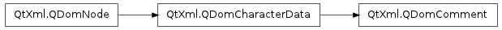

QDomComment ¶

Detailed Description ¶
The PySide.QtXml.QDomComment class represents an XML comment.
A comment in the parsed XML such as this:
<!-- this is a comment -->is represented by PySide.QtXml.QDomComment objects in the parsed Dom tree.
For further information about the Document Object Model see http://www.w3.org/TR/REC-DOM-Level-1/ and http://www.w3.org/TR/DOM-Level-2-Core/ . For a more general introduction of the DOM implementation see the PySide.QtXml.QDomDocument documentation.
- class PySide.QtXml. QDomComment ¶
- class PySide.QtXml. QDomComment ( x )
-
Parameters: x – PySide.QtXml.QDomComment Constructs an empty comment. To construct a comment with content, use the QDomDocument.createComment() function.
Constructs a copy of x .
The data of the copy is shared (shallow copy): modifying one node will also change the other. If you want to make a deep copy, use PySide.QtXml.QDomNode.cloneNode() .